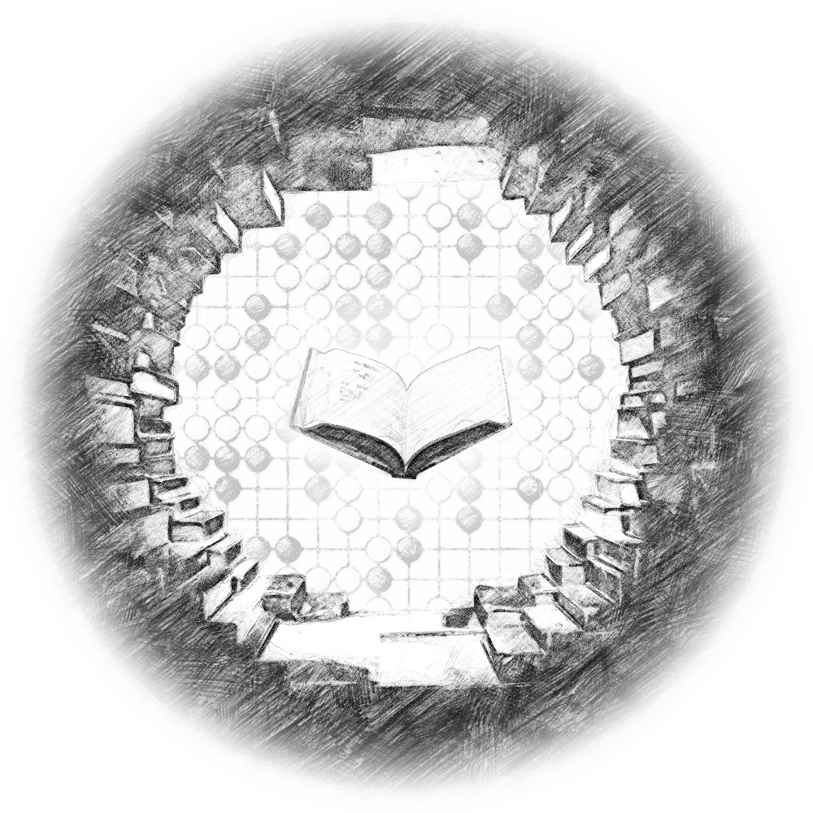

The Book of Go
The Book of Go is based on the longest continuously played board game named Go, where two players compete to strategically conquer the most territory. Go's ruleset is fairly simple, however the strategy behind the game is quite deep, which has kept people playing the game for at least 2,500 years. The Book of Go aims to incorporate the history of Go, modern AI, and RPG features to create a new experience to be played on PC.
Go is played by two players alternating turns placing black and white stones on the empty intersections of the board grid. The winner of the game is the player that controls the most space on the board. Stones that are connected to eachother act as a group, and stones can also be captured if they become completely surrounded, leaving no empty adjacent intersections. A more in-depth explanation of Go's ruleset can be found on the British Go Association's Website and will also be explained through tutorials within the game.
Go Gameplay
In the clip below, you'll see the black and white stone players taking turns placing stones and claiming areas of the board. At the end you'll see the board marked in black and white to represent the territory each player controls. White was able to form two separate groups on the board, and was also able prevent black's invasion in the lower left corner by capturing the two stones and securely taking the victory. For the sake of keeping the clip short, a 9x9 board was used, and the players are also playing at a very fast pace. The typical board sizes are 9x9, 13x13, and 19x19, with 19x19 being the most commonly played, but also taking the longest to complete a game.
Tutorial System
Tutorials are built into the game in order to explain Go rules and concepts in an interactive manner. Tutorials include text explanations and board markings to convey concepts. Additionally, at certain points during the tutorials, user input will be required to test the players understanding of the concepts and progress through the tutorials. Initial subjects include rules, score calculation, Go shapes, opening concepts, and end game concepts.
Go Problems
Go problems, puzzles, or tsumego, are predetermined board positions that have a particular move or set of moves in order to be solved. Most Go problems revolve around the life and death of a group of stones. Go problems range in difficulty and are a good way to practice reading out moves and recognizing shapes. Below are a few example Go problems.
Match Options
The book of Go offers many quick match customization options which are outlined and displayed in the clip below.
- Matches can be setup using the advanced tab to customize each option as needed, or the basic tab can be used for a default experience with minimal customization.
- Each player can be selected either as a local human player or an AI player.
- For AI players, there is a choice between several available open-source AI engines ( GNU Go, Feugo, Pachi, and Leela Zero ) and AI difficulty levels.
- For human players, names and ranks can be optionally entered.
- Additional sliders are available for board size (5x5 - 19x19),
komi,Komi is the additional points white starts with in order to offset the advantage black gets by playing firsthandicap,Handicap allows the player playing as black to start with 2 or more stones on the board in order to offset a skill gap between two playersmain time,Main time is the overal time limit each player has that counts down during each player's turn.byoyomi time, andAfter the main time has elapsed, byoyomi acts as a method for overtime, and is represented by the amount of seconds that are counted down each turn. On each new turn, the byoyomi resets instead of continuing to count down like the main time.byoyomi count.The amount of byoyomi periods that can be elapsed before a player loses a match due to running out of time.
Game Record Playback
The Book of Go has the ability to read and write game records in Smart Game Format (SGF). In addition to reviewing your own game records, several game records from professional players and tournaments will be available to view. The controls allow the user to move forward/backward by a single move, move forward/backward by a batch of moves (e.g. 15 moves), move forward/backward until a comment or note on a move appears, and move forward/backward until the end or start of the game record. Playback speed and batch size can be adjusted in the settings, but for the sake of keeping the clip below short, a fast speed was used. The game record played out below is a very famous game from 1846 by the Japanese player Hininbo Shusaku, which was nicknamed The Ear Reddening Game. During this game, after a brilliant move by Shusaku, his opponent's ears turned flushed red in frustration.
Additional Potential Features
Leveraging the core Go gameplay above, the additional features below are planned.
- RPG Campaign
- Play through a story learning the history and core fundamentals of Go from The Book of Go
- The player will complete various activities in order to gain experience and progress through the story
- Play Go matches against opponents for practice, tournaments, or wagers
- Complete Go problems focusing on conquering and defending territory
- In limited use, the player will be able to use character powerups gathered throughout the story for assistance. Powerups will use the AI to suggest areas to play, suggest moves, undo moves, check the life and death status of a stone group, slow time, and more.
- Auto-adjustment of the AI level to match the player's skill upon winning or losing matches
- Different difficulties to affect the initial AI level and speed in which AI level auto-adjusts
- Integration with a joseki library in order to teach standard exchanges of moves in the board corners
- Localization to other languages
- Integration with Steam Achievements